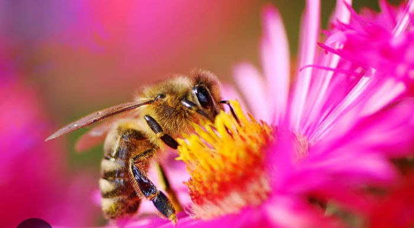
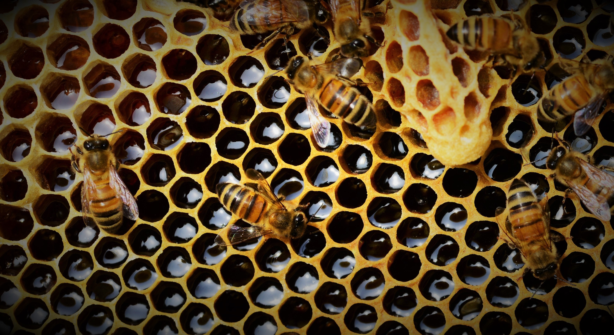

Honey is a sweet and viscous substance made by several bees, the best-known of which are honey bees. Honey is made and stored to nourish bee colonies. Bees produce honey by gathering and then refining the sugary secretions of plants (primarily floral nectar) or the secretions of other insects, like the honeydew of aphids. This refinement takes place both within individual bees, through regurgitation and enzymatic activity, as well as during storage in the hive, through water evaporation that concentrates the honey's sugars until it is thick and viscous.
 - Copy.jpeg)
Honey bees stockpile honey in the hive. Within the hive is a structure made from wax called honeycomb. The honeycomb is made up of hundreds or thousands of hexagonal cells, into which the bees regurgitate honey for storage. Other honey-producing species of bee store the substance in different structures, such as the pots made of wax and resin used by the stingless bee.
Honey for human consumption is collected from wild bee colonies, or from the hives of domesticated bees. The honey produced by honey bees is the most familiar to humans, thanks to its worldwide commercial production and availability. The husbandry of bees is known as beekeeping or apiculture, with the cultivation of stingless bees usually referred to as meliponiculture. Honey is sweet because of its high concentrations of the monosaccharides fructose and glucose. It has about the same relative sweetness as sucrose (table sugar). One standard tablespoon (15 mL) of honey provides around 190 kilojoules (46 kilocalories) of food energy. It has attractive chemical properties for baking and a distinctive flavor when used as a sweetener. Most microorganisms cannot grow in honey and sealed honey therefore does not spoil. Samples of honey discovered in archaeological contexts have proven edible even after thousands of years.
French honey from different floral sources, with visible differences in color and texture Honey use and production has a long and varied history, with its beginnings in prehistoric times. Several cave paintings in Cuevas de la Araña in Spain depict humans foraging for honey at least 8,000 years ago. While Apis melifera is an Old World insect, large-scale meliponiculture of New World stingless bees has been practiced by Mayans since pre-Columbian times.

Honey is produced by bees who have collected nectar or honeydew. Bees value honey for its sugars, which they consume to support general metabolic activity, especially that of their flight muscles during foraging, and as a food for their larvae. To this end bees stockpile honey to provide for themselves during ordinary foraging as well as during lean periods, as in overwintering. During foraging bees use part of the nectar they collect to power their flight muscles. The majority of nectar collected is not used to directly nourish the insects but is instead destined for regurgitation, enzymatic digestion, and finally long-term storage as honey. During cold weather or when other food sources are scarce, adult and larval bees consume stored honey, which is many times as energy-dense as the nectar from which it is made.
After leaving the hive a foraging bee collects sugar-rich nectar or honeydew. Nectar from the flower generally has a water content of 70 to 80% and is much less viscous than finished honey, which usually has a water content around 18%. The water content of honeydew from aphids and other true bugs is generally very close to the sap on which those insects feed and is usually somewhat more dilute than nectar. One source describes the water content of honeydew as around 89%. Whether it is feeding on nectar or honeydew, the bee sucks these runny fluids through its proboscis, which delivers the liquid to the bee's proventriculus, also called the honey stomach or honey crop. This cavity lies just above its food stomach, the latter of which digests pollen and sugars consumed by an individual honeybee for its own nourishment.
In Apis mellifera the honey stomach holds about 40 mg of liquid. This is about half the weight of an unladen bee. Collecting this quantity in nectar can require visits to more than a thousand flowers. When nectar is plentiful it can take a bee more than an hour of ceaseless work to collect enough nectar to fill its honey crop. Salivary enzymes and proteins from the bee's hypopharyngeal gland are secreted into the nectar once it is in the bee's honey stomach. These substances begin cleaving complex sugars like sucrose and starches into simpler sugars such as glucose and fructose. This process slightly raises the water content and the acidity of the partially digested nectar.
Once filled, the forager bees return to the hive. There they regurgitate and transfer nectar to hive bees. Once in their own honey stomachs the hive bees regurgitate the nectar, repeatedly forming bubbles between their mandibles, speeding its digestion and concentration. These bubbles create a large surface area per volume and by this means the bees evaporate a portion of the nectar's water into the warm air of the hive.

Hive bees form honey processing groups. These groups work in relay, with one bee subjecting the processed nectar to bubbling and then passing the refined liquid on to others. It can take as long as 20 minutes of continuous regurgitation, digestion and evaporation until the product reaches storage quality. The new honey is then placed in honeycomb cells, which are left uncapped. This honey still has a very high water content, up to 70%, depending on the concentration of nectar gathered. At this stage of its refinement the water content of the honey is high enough that ubiquitous yeast spores can reproduce in it, a process which, if left unchecked, would rapidly consume the new honey's sugars. To combat this, bees use an ability rare among insects: the endogenous generation of heat.
Bees are among the few insects that can create large amounts of body heat. They use this ability to produce a constant ambient temperature in their hives. Hive temperatures are usually around 35 °C (95 °F) in the honey-storage areas. This temperature is regulated either by generating heat with their bodies or removing it through water evaporation. The evaporation removes water from the stored honey, drawing heat from the colony. The bees use their wings to govern hive cooling. Coordinated wing beating moves air across the wet honey, drawing out water and heat. Ventilation of the hive eventually expels both excess water and heat into the outside world.
The process of evaporating continues until the honey reaches its final water content of between 15.5% to 18%. This concentrates the sugars far beyond the saturation point of water, which is to say there is far more sugar dissolved in what little water remains in honey than ever could be dissolved in an equivalent volume of water. Honey, even at hive temperatures, is therefore a supercooled solution of various sugars in water. These concentrations of sugar can only be achieved near room temperature by evaporation of a less concentrated solution, in this case nectar. For osmotic reasons such high concentrations of sugar are extremely unfavorable to microbiological reproduction and all fermentation is consequently halted. The bees then cap the cells of finished honey with wax. This seals them from contamination and prevents further evaporation.
So long as its water concentration does not rise much above 18%, honey has an indefinite shelf life, both within the hive and after its removal by a beekeeper.
One 1980 study found that mixed floral honey from several United States regions typically contains the following:
Fructose: 38.2%
Glucose: 31.3%
Maltose: 7.1%
Sucrose: 1.3%
Water: 17.2%
Higher sugars: 1.5%
Ash: 0.2%
Other/undetermined: 3.2%
.jpeg)
This means that 55% of the combined fructose and glucose content was fructose and 45% was glucose, which enables comparison with the essentially identical result (average of 56% and 44%) in the study described below:
A 2013 NMR spectroscopy study of 20 different honeys from Germany found that their sugar contents comprised:
Fructose: 28% to 41%
Glucose: 22% to 35%
The average ratio was 56% fructose to 44% glucose, but the ratios in the individual honeys ranged from a high of 64% fructose and 36% glucose (one type of flower honey; table 3 in reference) to a low of 50% fructose and 50% glucose (a different floral source). This NMR method was not able to quantify maltose, galactose, and the other minor sugars as compared to fructose and glucose.
Honey collection is an ancient activity, long preceding the honey bee's domestication; this traditional practice is known as honey hunting. A Mesolithic rock painting in a cave in Valencia, Spain, dating back at least 8,000 years, depicts two honey foragers collecting honey and honeycomb from a wild bees' nest. The figures are depicted carrying baskets or gourds, and using a ladder or series of ropes to reach the nest. Humans followed the greater honeyguide bird to wild beehives; this behavior may have evolved with early hominids. The oldest known honey remains were found in Georgia during the construction of the Baku–Tbilisi–Ceyhan pipeline: archaeologists found honey remains on the inner surface of clay vessels unearthed in an ancient tomb, dating back between 4,700 and 5,500 years. In ancient Georgia, several types of honey were buried with a person for journeys into the afterlife, including linden, berry, and meadow-flower varieties.
The first written records of beekeeping are from ancient Egypt, where honey was used to sweeten cakes, biscuits, and other foods and as a base for unguents in Egyptian hieroglyphs. The dead were often buried in or with honey in Egypt, Mesopotamia and other regions. Bees were kept at temples to produce honey for temple offerings, mummification and other uses.
In ancient Greece, honey was produced from the Archaic to the Hellenistic periods. In 594 BC, beekeeping around Athens was so widespread that Solon passed a law about it: "He who sets up hives of bees must put them 300 feet [90 metres] away from those already installed by another". Greek archaeological excavations of pottery located ancient hives. According to Columella, Greek beekeepers of the Hellenistic period did not hesitate to move their hives over rather long distances to maximize production, taking advantage of the different vegetative cycles in different regions. The spiritual and supposed therapeutic use of honey in ancient India was documented in both the Vedas and the Ayurveda texts.
Biblical references include the description of Israel as the "land of milk and honey". The Book of Proverbs says, "Eat honey, my son, for it is good" (Prov. 24:13), but also, "It is not good to eat much honey" (Prov. 25:27). Early Christians used honey as a symbol of spiritual perfection in christening ceremonies. St. John the Baptist was said to have sustained himself on a diet of honey and locusts.